SUPERWOOD for Data Centers — turbocharging the wood hyperscalers already build with
Companion to the SUPERMILLS Investor OverviewSeptember 2026
INVENTWOOD · CONFIDENTIAL
Data centers turn SUPERWOOD from a premium skin into a structural material
The buyer is short of steel and already building with wood
Data centers are among the fastest-growing buyers of structural steel. Customers report backlogs and shortages, and Microsoft and Meta already build data-center structures in mass timber.
We turbocharge the wood they already use
Mass timber replaces concrete floors. SUPERWOOD, stronger than A36 steel in tension at one-sixth the weight, adds the steel: members, skins and screens — and strengthens the mass timber itself. It ships today from SuperMill One; truss design and mass-timber enhancement are under way.
One basis-of-design win is SuperMill Two-scale demand
A gigawatt campus's skins alone are one to three years of SuperMill One's output; its structure is a year or more of SuperMill Two. Long term: prefabricated envelopes and, eventually, foundations.
The company, team, mills, cost roadmap and the raise are in the SUPERMILLS Investor Overview. This deck covers one application. Strength: company test data vs ASTM A36; campus sizing: company estimate (slides 5–6).
Data centers are a fast-growing buyer of structural steel, and they are short of it
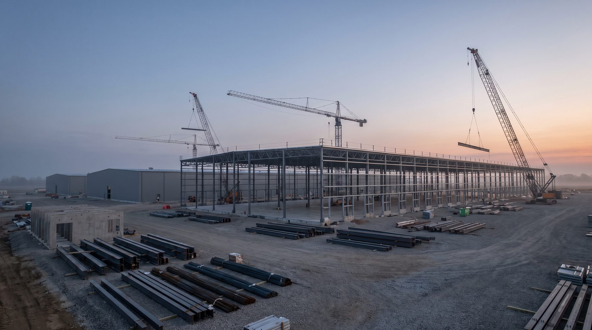
Steel-intensive
500–1,000 tons of structural steel and 5,000–10,000 m³ of concrete per 10 MW — literature intensities for hyperscale builds. A gigawatt campus carries roughly 50,000–100,000 tons of structural steel above the slab.
Supply-chain challenged
Customers report backlogs and a shortage of structural steel. Supply chain and timeline are the first concern they raise with us; a domestic material that is lighter to ship and faster to erect answers it directly.
Highly repeatable
Hyperscalers build to a standard basis of design, campus after campus. A material written into that design is specified again and again.
Steel and concrete intensities: arXiv 2509.21312 (Sep 2025), citing Hasan et al. 2022 and Sharma et al. 2023 — secondary literature figures, ranges as published (metric tons); per-GW figure is that range × 1,000 MW. Shortage and backlog statements are what data-center customers report to InventWood (2026), not a published statistic.
Hyperscalers are already building structures with wood. We turbocharge wood.

Two Northern Virginia datacenters with cross-laminated timber floors on a steel frame — about 35% less embodied carbon than conventional steel construction, 65% less than precast. Gensler; Thornton Tomasetti.
Microsoft Source, Nov 2024
Mass-timber data-center administrative buildings: Aiken, South Carolina completed 2025 (DPR, SmartLam); Cheyenne and Montgomery under way; about 41% less embodied carbon in the materials substituted.
Meta Sustainability, 31 Jul 2025Mass timber today (CLT, glulam) | With SUPERWOOD  | |
|---|---|---|
| What it replaces | Concrete floor slabs and decks; some columns and beams | Adds the steel: members, skins, screens and fences — and, ahead, enclosures and foundations |
| Strength | Lumber-grade; large sections carry the load | Tensile strength above ASTM A36 steel in samples, at one-sixth the weight; thin, dense members |
| The timber itself | Glulam and CLT at lumber stiffness | Mass-timber enhancement: SUPERWOOD outer laminations (~10% of section) raise a glulam beam's stiffness ~75% and strength ~100% |
| Exterior use | Needs protection from weather | Exterior grade; resists moisture, pests and rot |
| Fire | Chars; established assemblies | Chars; far better than ordinary wood — Class A demonstrated in testing |
| Code path | Established in the building codes | Certifiable under wood standards today; SUPERWOOD-specific standards are the goal |
Sources: news.microsoft.com, Nov 2024; Thornton Tomasetti project page; sustainability.atmeta.com, 31 Jul 2025. Logos and photographs are the companies' own, from the cited publications, used to identify the published projects. SUPERWOOD strength: company test data, parallel-to-grain tension. Hybrid-beam gains: derived from beam theory with SUPERWOOD modulus and strength, engineering write-up pending. Beams: concept renderings.
What a GW data center is made of
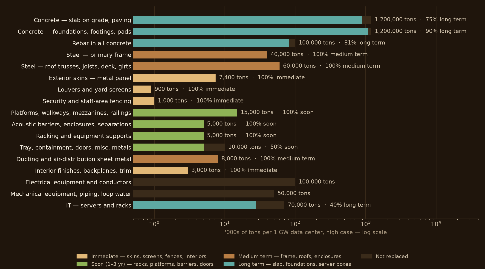
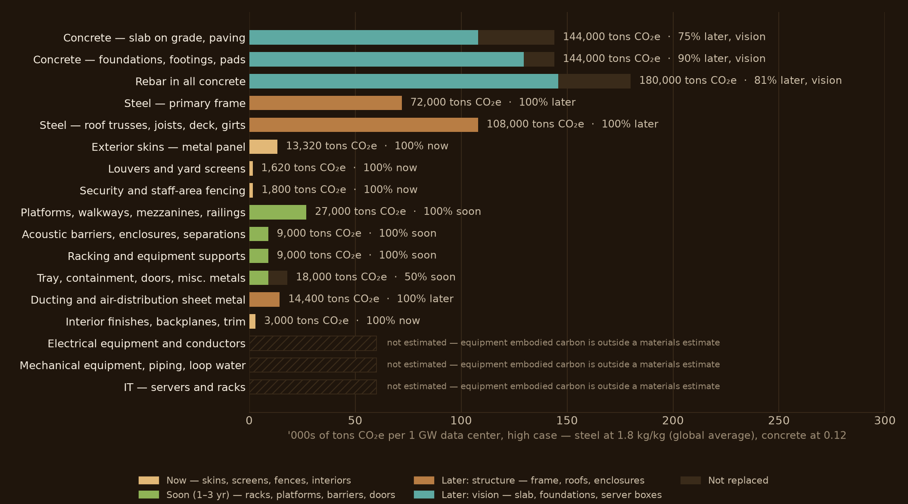
50–80% of the above-ground portion of a data center is steel
Structure, envelope and contents — frame, roof, skins, platforms, racks, enclosures, equipment. Skins, screens and fences now; racks, platforms and barriers next (racks are a few months of development away); frame and roofs as structure; server boxes eventually — the electronics never.
By embodied carbon, steel is about 60% of the building materials
At the global-average steel factor; about a third with recycled steel. The steel above the slab alone carries roughly 37% of the building materials' embodied carbon — the share SUPERWOOD addresses through the structural horizon.
Company estimate for a 1 GW IT-load campus, high case. Only the concrete and structural-steel intensities are published (arXiv 2509.21312, secondary, conf M); other rows are estimates from unit masses. Carbon factors: steel 1.8 kg CO₂e/kg (global average; recycled 0.4–0.7), concrete 0.12; equipment embodied carbon not estimated. Steel share: company estimate.
What one gigawatt of campus is worth to InventWood
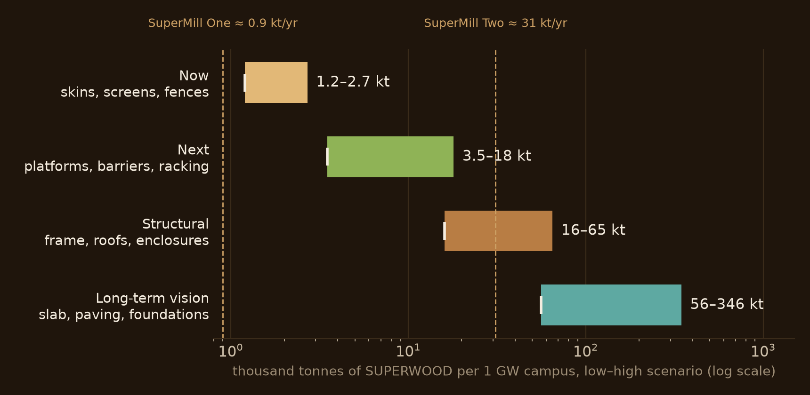
| Horizon | Incumbent replaced | SUPERWOOD required | Plant-years |
|---|---|---|---|
| Now — skins, screens, fences | 3.3–12 kt | 1.2–2.7 kt (1.4–3.1M sf) | 1.4–3.1 yr of SuperMill One |
| Next — racks, platforms, barriers | 12–30 kt | 3.5–18 kt | 0.1–0.6 yr of SuperMill Two |
| Structural — frame, roofs, enclosures | 53–108 kt | 16–65 kt | 0.5–2.1 yr of SuperMill Two |
| Long-term vision — slab, foundations, server boxes | 1,002–2,089 kt | 58–362 kt | 1.8–12 yr of SuperMill Two |
Two or three gigawatts of campus would take all of SuperMill Two's output for years. A basis-of-design win with one hyperscaler is the demand case for the second mill. It is also the capacity constraint.
Quantities: company estimate (slide 5 model; low–high scenarios). Incumbent replaced is steel except the long-term row (concrete, rebar, and server enclosures at 40% of IT mass — estimate; electronics excluded). SUPERWOOD required uses a 0.3–0.6 substitution factor for steel (estimate, to be engineering-stamped per element). Plant output: SuperMill One ≈ 0.9 kt/yr (1M sf), SuperMill Two ≈ 31 kt/yr (36M sf) at 0.87 kg/sf, 1.3 t/m³. Pricing is set per application; see the SUPERMILLS Investor Overview for the cost roadmap.
We unlock the power of cellulose
Our patented process transforms ordinary wood into SUPERWOOD — an environmentally benign process using chemistry common to food and pulp processing.
01 · Start with woody feedstock
Hardwoods, softwoods, bamboo, underutilized species, waste wood
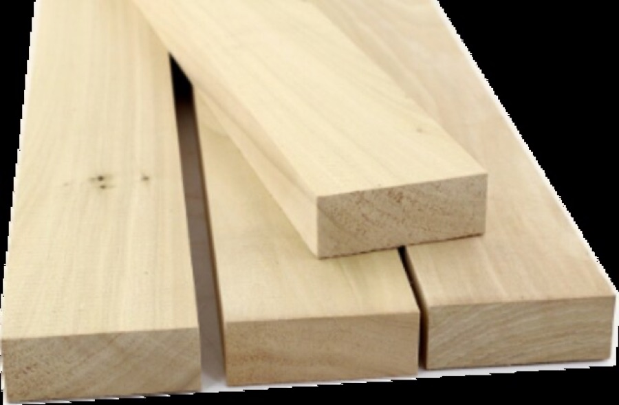
02 · Molecular re-engineering & densification
3–4× density increase, elimination of pores and defects, new hydrogen bonds across fibers
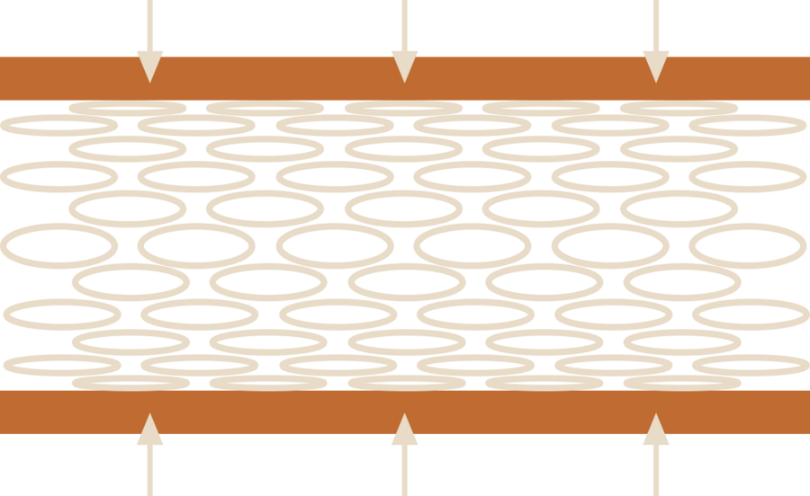
03 · SUPERWOOD
Samples more than 50% stronger than A36 steel in tension, at one-sixth the weight
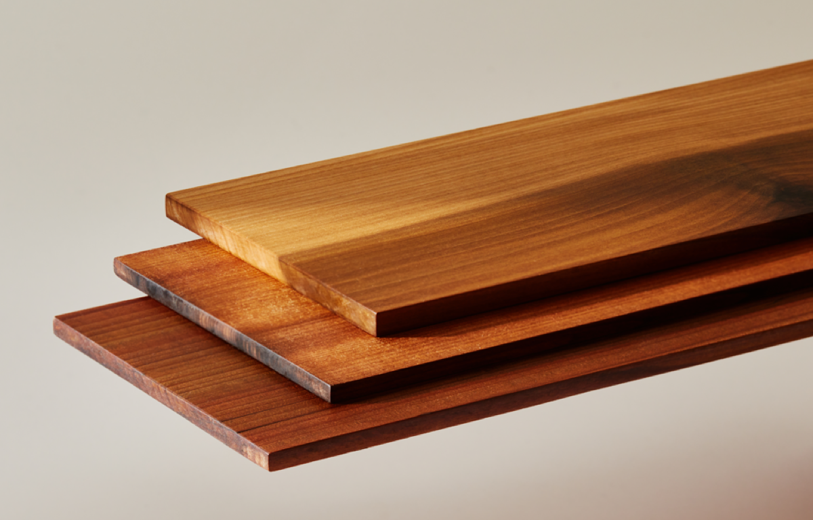
The strength of SUPERWOOD
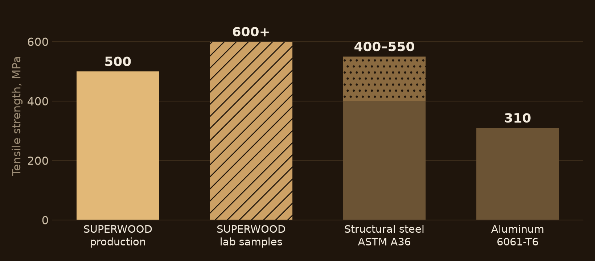
Strength: 500–600 MPa SUPERWOOD ÷ 400 MPa (A36 minimum ultimate tensile) = 1.25–1.5×.
Weight: steel 7.85 t/m³ ÷ SUPERWOOD ~1.3 t/m³ ≈ 6×.
Strength-to-weight: 1.25–1.5 × 6 ≈ 7–9×.
Against the top of the A36 range (550 MPa) the strength ratio is 0.9–1.1×; “stronger than steel” is stated against the A36 minimum.
SUPERWOOD: parallel-to-grain tension, company test data (production QC and lab samples). Steel: ASTM A36 specifies 400–550 MPa ultimate tensile. Aluminum: 6061-T6, 310 MPa typical. Design values and test methods available on request.
Properties that matter on a data center campus

Stronger than steel.
One-sixth the weight.
Made from wood, in America.
Fire performance
Chars rather than burns — far better in fire than ordinary wood. ASTM E84 Class A demonstrated in testing; specified per order
Durable and impact resistant
Harder and more dent-resistant than oak; impact and storm resistant — suited to fences, screens and door protection
Resists moisture, pests and rot
Exterior grade for facades, yards and fences; no rust; resists termites, mold and fungus
Insulating, not conducting
Thermal and electrical insulator — no thermal bridging, and non-conductive around electrical infrastructure
Sound and vibration damping
Better damping than steel — the basis for acoustic barriers and equipment screens
RF transparent
Useful in niches: antenna screening, timing-antenna enclosures, telecom shelters
Naturally beautiful
The texture, colors and warmth of wood — the biophilic, community-facing surface
Company test data; property data package and test methods available on request. Fire: Class A is a demonstrated capability, not a rating carried by every board.
Faster to build: lighter, prefabricated, reconfigurable
One-sixth the weight of steel
Smaller cranes and crews, easier transport, lighter foundations. Time to power is what hyperscalers optimize.
Prefabricated to precision
Panels and modules built off site and set like mass timber — standardized designs, plug-and-play systems.
Designed for assembly and disassembly
Reusable, reconfigurable components for infrastructure that changes with every hardware generation.
Mass timber's schedule record
About 20% average schedule savings across seven case studies, up to 25–30% in others. SUPERWOOD builds the same way.

Schedule figures are mass-timber case studies (ULI Urban Land: ~20% average across seven case studies, 12.7 vs 15.4 months; other studies 25–30%), used as an analogy for a material that builds the same way. No SUPERWOOD schedule data yet.
Now: skins, screens and fences from SuperMill One
Every item below ships today as boards up to 8" × 16' × 3/8", exterior or interior grade. SuperMill One makes about one million square feet a year across all markets.

Facades, cladding & rain screens
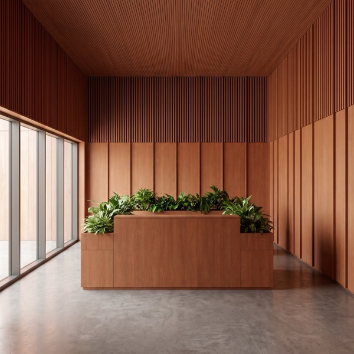
Biophilic interiors for office space

Louvers & equipment screening

Fencing for staff outdoor spaces

Security fencing around transformers & outdoor infrastructure

Trim, door kicks & sub-framing
Why these first. They need no assembly fire rating — where a finish rating applies, Class A has been demonstrated and is specified per order. They sit where the community and the workforce see the campus. And they are the near-term projects our hyperscaler customers asked for: facades, biophilic office interiors, staff-area fencing, security fencing around critical outdoor infrastructure.
Concept renderings
Next: applications one test program away

Acoustic barrier walls & equipment screens

Walkways & platforms

Railings

Window mullions

Interior doors & door protection

Equipment backplanes

Racks & equipment supports
Each needs one scoped test program, which can be co-funded with a customer. Order depends on which a customer picks up first.
Concept renderings
Structural: starting now, scaling with SuperMill Two

Structural work has begun. Truss design is starting, and mass-timber enhancement — SUPERWOOD laminations that stiffen and strengthen glulam and CLT-type members — is under way. We expect structural sales on the way to SuperMill Two.
Replacing structural steel is the first thing new data-center customers ask about.
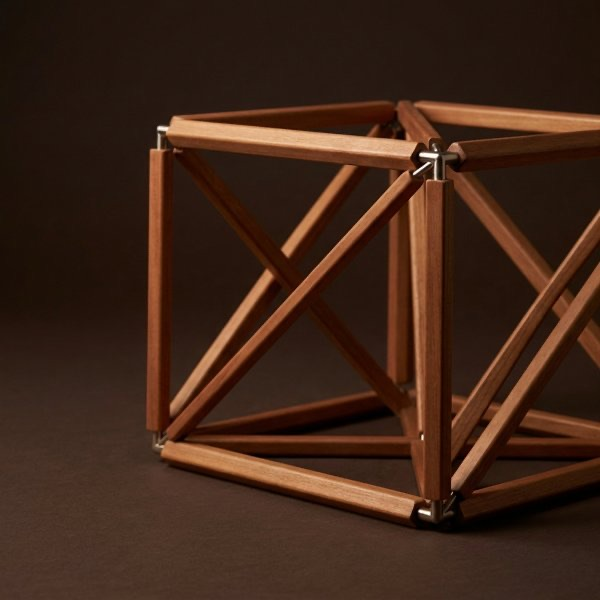
Building enclosures & structural components
The co-development target with hyperscaler architects and engineers
Trusses, roofs & long-span members
Roof structure first; fast-to-build enclosures follow
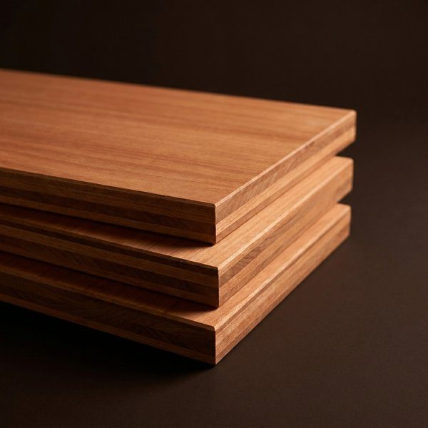
CLT-type floor, roof & wall assemblies
Thin, far stronger panels through the mass-timber product route
Heavy equipment supports & server enclosures
Racks come next, a few months of development; enclosures for servers and equipment follow — the electronics stay
How qualification works. Every structural application is qualified through a scoped test program with the customer who picks it up first, on the pathway mass timber has already opened in the building codes, with insurer acceptance for structural use. Test methods and property data are available on request. This is what Microsoft and Google are asking about.
Concept renderings
Long term: prefabricated envelopes, then foundations
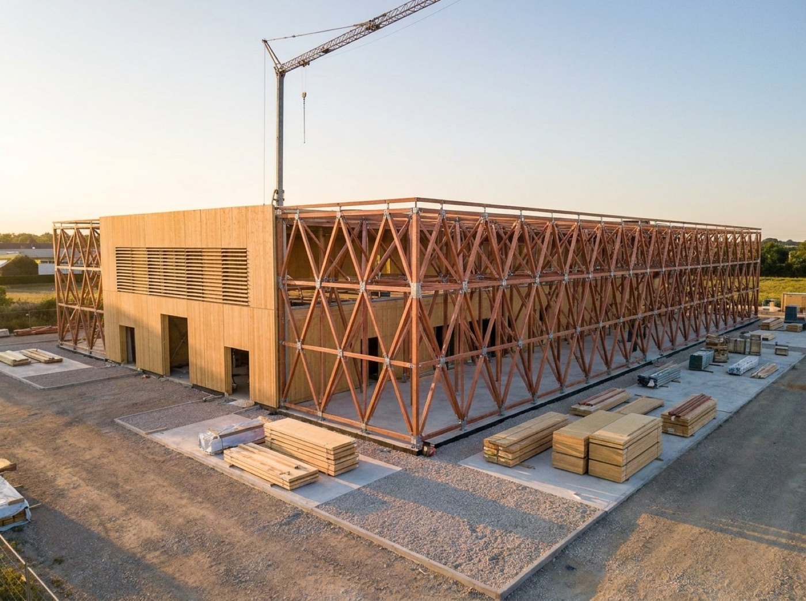
Prefabricated building envelopes
Structure and skin shipped as panels and modules — the co-development target with our hyperscaler customers' architects and engineers. Shells that carry their own loads, weigh far less than steel and precast, and can be disassembled and moved.
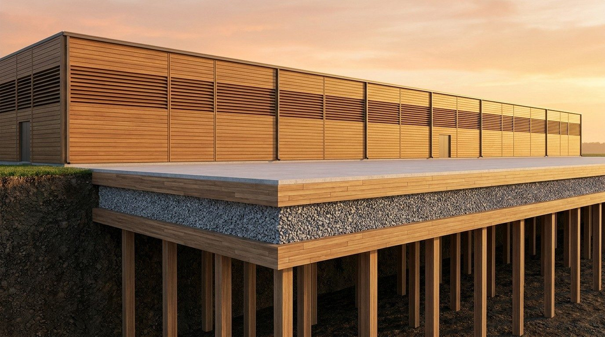
Foundations, slabs and paving
Lightweight, insulated SUPERWOOD foundations and slabs in place of concrete — installed faster, with lower geotechnical demands, and potentially movable.
Stated technical potential, not an engineered plan: slab, paving and foundations are on the order of 1–2 million tons of concrete and rebar per gigawatt. No design or code pathway exists yet.
Concept renderings
Customer engagement
Microsoft
Facades, biophilic interiors, staff and security fencing under discussion; roof-truss and enclosure work with their architecture and engineering firms; interest in SUPERWOOD in the basis of design
Meta
Engaged for over a year across the data-center ecosystem; facade applications and backplanes under way; structural applications and racking to follow
Engagement just begun; initial focus on replacement of structural steel
Vertiv · Wooden Data Center
Equipment and modular data-center builders exploring SUPERWOOD components
Data center operators
Operators focused on security fencing around outdoor infrastructure
Engagement stages and partner statements as reported by InventWood, September 2026; next steps undated. Public-record backup for Microsoft and Meta on the next slide.
Microsoft and Meta
Microsoft broad engagement
Two Northern Virginia datacenters built with cross-laminated timber floor panels on a steel frame — an estimated 35% embodied-carbon reduction vs. conventional steel construction and 65% vs. precast concrete. Design by Gensler; structural engineering by Thornton Tomasetti.
Microsoft Source, Nov 2024; Thornton Tomasetti project pageStrategic interest
Incorporating SUPERWOOD into the basis of design for future data centers
Application areas
Roof trusses, leading to roofs and fast-to-build enclosures — with their principal architecture and engineering firms
Immediate opportunities
Building facades · biophilic interiors · staff-area fencing · security fencing around transformers
Meta engaged for over a year
Piloting mass timber for data center administrative buildings: first completed in 2025 at Aiken, South Carolina (DPR, SmartLam); projects under way in Cheyenne, Wyoming and Montgomery, Alabama — about a 41% reduction in the embodied carbon of the materials substituted.
Meta Sustainability, 31 Jul 2025Broad engagement
Across every part of the data-center ecosystem, for more than a year
Under way
Facade applications and equipment backplanes
Next
Structural applications and racking over time
Engagement statements as reported by InventWood, September 2026. Sources: news.microsoft.com, Nov 2024; thorntontomasetti.com; sustainability.atmeta.com, 31 Jul 2025.
Can the world's data centers be big, beautiful carbon sinks?
Big
A gigawatt campus is millions of square feet of skins and screens and tens of thousands of tonnes of structure — and hyperscalers build campus after campus to one design.
Beautiful
Warm, quiet, biophilic exteriors and interiors that ease community and planning approval.
Carbon sinks
Built from a material that stores about 1.3 kg CO₂e of biogenic carbon per kg and displaces the steel that carries most of the building materials' embodied carbon.
Whether a building nets out as a store of carbon depends on the LCA (under way with Prof. Ming Hu, University of Notre Dame), on what steel and concrete SUPERWOOD displaces, and on end-of-life accounting. The next slide gives the numbers and their basis.
Embodied carbon: a projection until the LCA is complete
Biogenic carbon, reported separately. SUPERWOOD stores about 1.3 kg CO₂e of biogenic carbon per kg. Under EN 15804 it is released again in the end-of-life module, so it nets to zero over the life cycle. The lasting advantage is lower manufacturing emissions, not storage.
SUPERWOOD needed: 0.3–0.6 t per tonne of steel replaced (substitution factor, estimate — to be engineering-stamped per element).
SUPERWOOD manufacturing emissions: 0.3–0.6 t × 0.5 = 0.15–0.30 t CO₂e.
Against average steel (1.8 t): a reduction of 83–92%.
Against recycled steel (0.4–0.7 t): a reduction of 25–79%.
Any stated reduction must name its steel baseline and its substitution factor. Both are shown here; neither is yet verified.
Pre-LCA projection for a full-scale plant. LCA under way with Prof. Ming Hu, University of Notre Dame.
SUPERWOOD 0.5 kg/kg manufactured and 1.3 kg/kg biogenic: company projections, pre-LCA. Steel 1.8 kg/kg: global BF-BOF average. EAF 0.4–0.7 kg/kg: typical published range for recycled-scrap steel [conf: M]. Substitution factor 0.3–0.6: company estimate. Reductions are arithmetic on these inputs.
Risks and how we handle them
| Risk | How we handle it |
|---|---|
| Insurers and code officials must accept SUPERWOOD for structural use | Start with skins and non-structural items that need no assembly rating. Qualify structural applications with the first customer, on the pathway mass timber opened. |
| Qualification could run longer than customer design cycles | Sell what needs no qualification now. Hyperscalers design campuses years ahead, so basis-of-design work starts before qualification ends. |
| One plant, shared across every market | SuperMill One allocates output; a gigawatt's skins alone are one to three plant-years. SuperMill Two resolves it; that is what the raise funds. |
| Price against metal panel, fiber cement, CLT and recycled steel | Premium skins where appearance and community acceptance carry value. Structural competitiveness arrives with SuperMill Two cost (roadmap basis, not yet realized). |
| Carbon figures are projections until the LCA lands | Labeled pre-LCA everywhere; LCA under way with Prof. Ming Hu, University of Notre Dame. No carbon claim without its baseline and substitution factor. |
| Customer concentration | Three hyperscalers plus Vertiv, Wooden Data Center and operators — and what is qualified for a data center is qualified for the wider structural market. |
No probabilities are assigned. These are the conditions the data-center case depends on.
Path to first projects
Skins on one building or yard
Facades, interiors, louvers, staff-area or security fencing — installed from SuperMill One output with a willing customer. Produces an installed reference and installed-cost data.
A scoped test program with that customer
Toward whatever the chosen application needs, co-funded. Produces the data package the next application inherits.
Basis-of-design work with the customer's architect and engineer
Structural enclosure and truss solutions that can be written into the standard campus design. Produces a specification that repeats.
Measure the carbon delta
A baseline bill-of-materials comparison and verification plan. Produces defensible numbers as the LCA completes.


Steps are sequenced, not dated. Each names what it produces.
Let's build what's next.
Alex Lau · CEO / Co-Founder · alex@inventwood.com
Lex Harris · Director, Capital Markets & IR · lex@inventwood.com